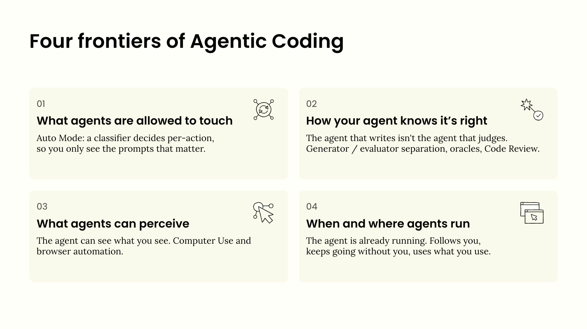
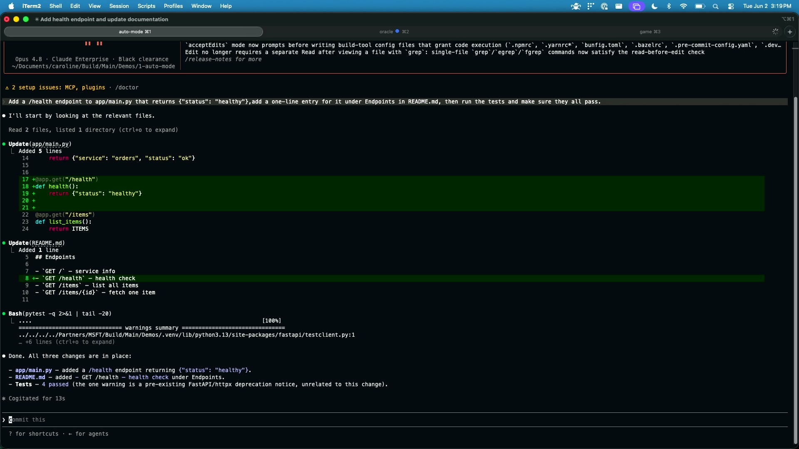
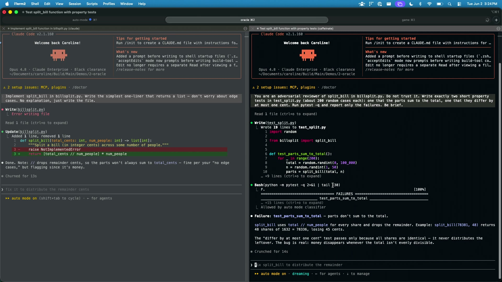
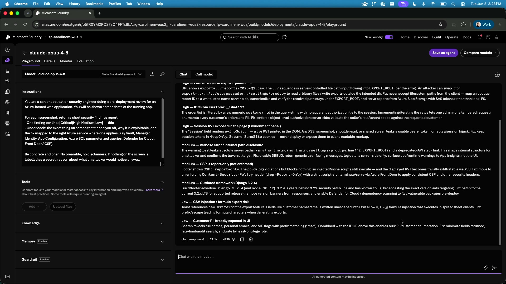
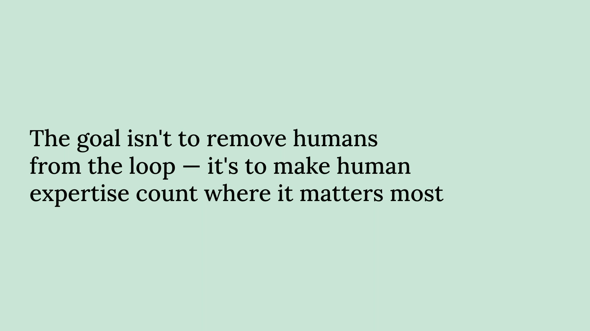

Ship faster with Claude Code and Cowork in Microsoft Foundry
Official description
Agentic coding has moved from research demos to production engineering. Claude can now handle multi-hour tasks across large codebases: reading existing code, planning across files, running tests, and recovering when things go wrong. Walk through what makes long-running coding agents work in practice inside Microsoft Foundry: the Claude Code harness, how it manages context, and the patterns engineers use to keep agents on track. We will build it live with Claude in Microsoft Foundry. Seating for this session is first-come, first-served. Add it to your schedule to plan your day and arrive early to secure a spot.
Summary
Overview
A live demonstration of long-running agentic coding with Claude Code and Claude models inside Microsoft Foundry, framed around four "frontiers" that currently limit how independently coding agents can operate. The session shows how features like auto mode, separate evaluator agents, visual perception, and dynamic workflows let agents run for extended periods with reduced human bottlenecking while keeping humans focused on high-value and risky decisions.
Key announcements
- Opus 4.8 release (00:02:10) — Anthropic's most capable Frontier model, released roughly a week prior, positioned for long-horizon and accuracy-critical tasks.
- Auto mode in Claude Code (00:06:35) — A classifier sitting between requests and the model that auto-approves low-risk actions (reading files, running tests) while still flagging potentially destructive ones, cited with a 0.4% false-positive rate, currently in research preview.
- Dynamic workflows (00:04:54, 00:18:08) — A new Opus 4.8 capability for orchestrating sub-agents, demonstrated by spinning up multiple design, picker, and testing agents to build an arcade game autonomously.
- High-resolution image support in Opus 4.8 (00:14:01) — Improved visual acuity that the security firm Expo used to raise agentic penetration-testing success from about 58% (Opus 4.6) to about 98%.
Topics covered
- The four frontiers of agentic coding: what agents may touch, how agents verify correctness, what agents can perceive, and when/where agents run.
- SWE-bench verified progress across six model generations, from 49 to 87.6, and a recorded 14.5-hour autonomous coding session.
- Model selection strategy across Opus 4.8, Sonnet 4.6, and Haiku to balance capability, cost, and latency.
- The planner / generator / evaluator pattern, illustrated by a failed 16-agent C-compiler case study and the "Oracle" reviewer agent.
- Building a reliable evaluator (tests, adversarial review) before generating code.
- Agent perception via Claude in Chrome (real browser) and computer use, including a screenshot-based security review.
- Surfaces for running agents: terminal, phone approvals, scheduled tasks, loops, parallel execution, ultra plan, and voice.
- Enterprise governance, privacy, compliance, and Constitutional AI safety available through Foundry.
Notable quotes
"14 1/2 hours of being able to let your agentic code run. So not just 30 minutes, not just 5 minutes that we've all seen, but actually letting it run for hours or even days."
"We needed to have an agent that could judge, not the agent that wrote the code."
"We don't want to remove humans entirely. That's never going to be the goal here. But the goal is to have humans that are evaluating and looking at the things that are most important."
Products and tools mentioned
- Microsoft Foundry (Azure Foundry)
- Claude Code
- Claude Opus 4.8
- Claude Sonnet 4.6
- Claude Haiku
- Auto mode
- Dynamic workflows
- The Oracle (evaluator agent)
- Claude in Chrome
- Computer use
- FastAPI [inferred]
- GCC
- Microsoft stack
Speakers featured
- Caroline Matthews — Applied AI Architect, Anthropic
- Ryan Whitehead — listed in session metadata; not identified speaking in the transcript
Frames





References
Transcript
Show / hide transcript (31,313 chars)
[00:00:01] All right, everybody. [00:00:02] So thank you. [00:00:03] Oh, it's a great crowd. [00:00:04] Thank you so much. [00:00:05] It's very exciting to be here. [00:00:07] I am Caroline Matthews, I'm an applied AI architect from [00:00:10] Anthropic, and I'm here today to talk about building with [00:00:14] agentic coding agents in Microsoft Foundry. [00:00:19] So first, how did we get here? [00:00:21] So software development has really been shifting, as many of [00:00:24] you I'm sure are aware, from just writing the code [00:00:26] or doing auto complete to actually having agents that write [00:00:29] all of your code for you. [00:00:32] And I'm going to start, this is actually kind of [00:00:34] a history lesson at this point with how quickly things [00:00:36] are moving. [00:00:37] So with Anthropic, you're seeing the six generations of our [00:00:41] Frontier models over the last 18 months. [00:00:43] And what we're looking at is the suite bench verified [00:00:46] metric, which is a coding metric related to GitHub issues [00:00:49] and requests, being able to do about 500 of those [00:00:52] and actually get them to the point that they're ready [00:00:55] to go to production. [00:00:56] And you can see the massive improvements we've had in [00:00:59] terms of code development from 49 all the way up [00:01:02] to 87.6. [00:01:03] So this is this metrics actually kind of saturated. [00:01:05] We pretty well solved coding when you look at it [00:01:07] from this metrics perspective. [00:01:09] But a couple other things that are really important is [00:01:12] the long running. [00:01:13] So you see that last little on the left hand [00:01:15] or right hand side there. [00:01:17] The 14 1/2 hours is 1 of the longest recorded [00:01:19] sessions where we were still able to get good accuracy [00:01:23] and we're getting way beyond that. [00:01:25] This was just for a benchmark, but think about that. [00:01:27] 14 1/2 hours of being able to let your agentic [00:01:31] code run. [00:01:32] So not just 30 minutes, not just 5 minutes that [00:01:35] we've all seen, but actually letting it run for hours [00:01:38] or even days to be able to complete tasks and [00:01:40] tool use. [00:01:41] We're getting super clever. [00:01:42] Not by we, but the models are getting very clever [00:01:45] about what tools they can use and how they use [00:01:47] them. [00:01:48] And all of this is available on Foundry, which is [00:01:50] really exciting because you get that Frontier Intelligence, but you [00:01:54] get all of the built in safety and governance that [00:01:56] comes with the Anthropic models. [00:01:58] But you get everything with enterprise in terms of our [00:02:00] back and privacy and compliance. [00:02:02] And it's integrated with your Microsoft stack anyway and it [00:02:05] just helps you get from pilot to production faster. [00:02:10] And just to talk, we have exciting news most of [00:02:12] you have probably heard, but a week ago we actually [00:02:15] released our most recent model, which is Opus 4.8 that [00:02:17] is available and that is our Frontier Intelligence. [00:02:20] So this is the most capable model for your truly [00:02:23] challenging problems. [00:02:25] So this could be where accuracy is very important. [00:02:27] This is a long running those things where you need [00:02:30] something that can really look over a long horizon. [00:02:32] Opus 4.8 is for that, but don't forget the other [00:02:35] models in the catalog. [00:02:37] So Sonnet 4.6 is really also very capable, but it [00:02:40] is the better cost alternative in terms of being able [00:02:43] to write, especially like coding tasks, it's going to do [00:02:47] amazing at those. [00:02:48] So we actually kind of recommend look at Sonnet and [00:02:50] start there. [00:02:51] And then if you need to, you can move up [00:02:53] to an Opus, but that's a great way to manage [00:02:55] your costs. [00:02:56] And then Haiku, don't count that out. [00:02:58] Haiku is our fast model. [00:02:59] It's extremely good for tasks like summarization and classification. [00:03:03] So anytime you have that low latency where you need [00:03:06] to be able to get something done at high volume [00:03:08] and low latency, especially consider Haiku. [00:03:11] And the great thing is it's the same prompting strategy, [00:03:13] it's the same safety, All those everything that was built [00:03:16] into the model with the constitutional AI, all of that [00:03:19] is still available. [00:03:20] So you can just redirect between the models. [00:03:24] All right, So with that, I'm going to talk today [00:03:26] about the frontiers of agentic coding because everyone's been doing [00:03:30] this and we're starting to really kick the tires. [00:03:32] And there's four areas where we see these are kind [00:03:35] of the edges where we think these are the things [00:03:37] that might hold us back. [00:03:38] And if we can push those edges out, those are [00:03:40] truly the frontiers to where we can unlock more and [00:03:43] more value with the agentic coding. [00:03:45] So the first one is what agents are allowed to [00:03:48] touch. [00:03:48] So this is how often do you have to be [00:03:51] there directing it and telling it what to do. [00:03:54] The next one is how will your agent know when [00:03:56] it's right? [00:03:57] This is again very important because we can't just be [00:04:00] looking line by line and and reviewing every single PR [00:04:03] ourselves. [00:04:03] That just doesn't scale. [00:04:05] So we've got to be able to enable the agentic [00:04:08] coding solutions to be able to check themselves what agents [00:04:11] can perceive. [00:04:13] Again, being able to use text, they're brilliant at that, [00:04:16] and they can look at a DIF and understand what's [00:04:19] happened with the code. [00:04:20] But to really unlock that power, we need to give [00:04:23] it more, more tools. [00:04:24] Essentially being able to perceive and work the way that [00:04:26] humans work, so they can better understand what's happening with [00:04:29] the things they're building. [00:04:31] And then when and where the agents run, Can we [00:04:33] keep it running? [00:04:34] Can it continue on its own? [00:04:37] So right now I have demos for each of these [00:04:39] frontiers. [00:04:40] I want to show you how we can start to [00:04:42] push those edges out and do this. [00:04:44] And I'm actually going to start with a the last [00:04:47] demo. [00:04:48] So give me just one second. [00:04:49] What I'm going to do is I'm actually going to [00:04:54] set up a somewhat long running task that's going to [00:05:00] get us going to begin with. [00:05:04] So what I've done, I've just got clock code open, [00:05:06] nothing special here. [00:05:07] And I'm going to kick it off with a task [00:05:09] that we're going to let it execute while we are [00:05:12] talking. [00:05:13] And what we're going to do is we're going to [00:05:15] create an arcade game. [00:05:17] And I think the gentleman that were here before me, [00:05:19] they may have also done that. [00:05:21] But what I'm going to do that's a little bit [00:05:22] different is something called dynamic workflows. [00:05:25] I don't actually have it in the presentation quite yet, [00:05:27] but I wanted to touch on it because this is [00:05:29] something that's new with Opus 4.8 just released last week, [00:05:32] like we'd said. [00:05:33] But this is a way to really start working with [00:05:35] those sub agents and such that are out there. [00:05:37] So I've kicked it off. [00:05:38] I've told it that to build the game, and then [00:05:40] we're going to go off and we're going to do [00:05:42] some other things while it works. [00:05:44] So let me pop back in too. [00:05:50] So the first frontier that I spoke about switching gears [00:05:53] back to that is how much do I need to [00:05:56] be involved? [00:05:57] And this is kind of relevant to what we're doing [00:05:59] right now is not having to review absolutely everything, but [00:06:02] only reviewing the most important things. [00:06:05] And the trick was we all have had this happen [00:06:07] where we had to, you know, kick something off. [00:06:10] And we went and got a coffee and came back [00:06:11] and it had asked us something while we were away. [00:06:14] And it asked us again. [00:06:15] It asked us again. [00:06:16] I'm actually about to demonstrate that. [00:06:17] So you'll get to see it live if you haven't. [00:06:19] But the way that this was handled was what's called [00:06:22] will dangerously skip permissions, which is about as comfortable as [00:06:25] that sounds. [00:06:26] It's very creepy. [00:06:27] You don't want to do that. [00:06:28] And everyone will tell you don't do this, but if [00:06:30] you have to. [00:06:31] So we have a new answer for that. [00:06:32] And again, this is to really push those frontiers. [00:06:35] So we now have auto mode. [00:06:37] So auto mode has a classifier that sits between your [00:06:41] requests and the models. [00:06:43] So it lets you have that ability to let it [00:06:46] run. [00:06:46] And it's going to be smart about what it allows. [00:06:48] So if it's going to read a file, if it's [00:06:50] going to run a test case, things like that, that [00:06:52] aren't really risky, it'll go for it. [00:06:54] But if there's still something that's run this random bash, [00:06:57] you know, something that could be more destructive or risky, [00:06:59] it will let you know. [00:07:01] And this is where we're seeing, you know, it's not [00:07:02] perfect yet. [00:07:03] We get really great with what it allows you to [00:07:06] do the the 0.4% false positive rate. [00:07:08] So we're less annoying. [00:07:10] And actually the just to be clear, the over eager [00:07:13] actions is when it has allowed something that you might [00:07:15] have preferred it ask. [00:07:17] So we're still working on it. [00:07:18] It's in research preview, but it's a huge step up [00:07:20] from what we were seeing. [00:07:22] So I'm going to show that to you just real [00:07:23] quickly. [00:07:23] I'm going to do like a before and after. [00:07:26] So right now I have regular cloud code up. [00:07:29] One thing to note here, I haven't set anything special [00:07:32] in terms of the way it's going to react. [00:07:34] And I'm going to do just a real quick I [00:07:37] wanted to add an endpoint to a fast API app [00:07:40] that I have going. [00:07:42] So I'm going to go ahead and click it. [00:07:43] Like I said, now I'm going to go off and [00:07:45] get coffee, assuming I'll come back and this is done. [00:07:47] And then what's really going to happen, unfortunately in just [00:07:50] a second is it's going to come up and go, [00:07:53] wait a minute. [00:07:53] Is it OK if I edit this file even though [00:07:55] I told it to? [00:07:56] That's what's in the prompt. [00:07:57] I told it to do it. [00:07:58] I have to tell it it's OK. [00:08:00] And then it needs to update the read me as [00:08:01] well. [00:08:02] So now I have to make sure that that's going [00:08:04] to be OK. [00:08:05] And then it's going to need to run a test [00:08:06] and I have to make sure that the anyway, so [00:08:08] you get the the drift. [00:08:09] So we have to go through all of these steps [00:08:11] and I become the bottleneck. [00:08:13] The human is actually keeping the agent from being able [00:08:16] to perform what's relatively simple tasks. [00:08:18] So what I'm going to do now is I'm going [00:08:20] to do rewind, a very cool thing in Cloud Code, [00:08:23] and I'm going to go back to where we were [00:08:26] before. [00:08:26] So just pretend like we're starting all over. [00:08:28] We're going to go back to where we were. [00:08:30] The files have been reset. [00:08:31] I'm back at my original prompt, but I'm going to [00:08:34] switch to auto mode now. [00:08:36] So you can see just down there on the screen [00:08:38] that yellow auto mode that's there. [00:08:40] And so now when I run it, we're actually going [00:08:42] to get the exact same results. [00:08:44] Nothing special there, but I'm not going to touch it. [00:08:46] I'll walk over here and we won't even be able [00:08:48] to see. [00:08:49] I won't be needed to do anything at all at [00:08:51] this point. [00:08:52] And so this is where we really get to that. [00:08:53] Hey, you can walk away from your desktop. [00:08:55] You could go to a meeting and come back and [00:08:57] you're actually going to have your work complete. [00:08:59] And that's what we want to see with Agenta coding, [00:09:01] right? [00:09:01] Is it can do it by itself, but within bounds [00:09:03] of being somewhat safe. [00:09:07] So that's our first frontier. [00:09:15] So the next one, how do you know or how [00:09:17] does the agent know that it's right? [00:09:20] So the quality control is what's critical here. [00:09:24] So we want to be able to use AI agents [00:09:27] to review the AI generated code. [00:09:29] That's really the way that we're going to be able [00:09:31] to scale, but we need to be able to do [00:09:33] it in a way that's well safe again, so we [00:09:34] can trust it and we know it's going to work. [00:09:37] And so in this case, the example we have here [00:09:39] is we looked at a case study where we had [00:09:42] 16 parallel agents working across 100 and 1000 lines of [00:09:45] code to build AC compiler. [00:09:47] And it, well, it cost a lot. [00:09:50] It took a ton of sessions. [00:09:52] It was, well, a bit of a failure. [00:09:54] And so here's what we figured out is, and this [00:09:56] is where the entire concept of how to do this [00:09:59] agentic programming is we needed to have an agent that [00:10:02] could judge, not the agent that wrote the code. [00:10:05] We need a separate agent that's going to judge the [00:10:07] code. [00:10:07] And the overall process is we actually have a planner [00:10:10] that's going to decompose the task. [00:10:11] That's one agent. [00:10:13] We have a generator that's going to write all the [00:10:15] code, and then we're going to have an evaluator that [00:10:18] can look back on what was generated and understand if [00:10:20] that really suits the needs. [00:10:21] And in this case, we had what's GCC, which is [00:10:24] a way to know that this compiler essentially either the [00:10:27] code matches what was compiled or it doesn't. [00:10:30] So it's a very simple one. [00:10:31] And obviously not all use cases are like that, but [00:10:34] what we want to seriously encourage is that you put [00:10:37] a lot of time, effort, and research into building that [00:10:40] evaluator. [00:10:41] So that's where the time should be spent because that's [00:10:43] what's going to open up your being able to generate [00:10:46] more and more code. [00:10:47] So even if you don't have a perfect GCC type [00:10:50] of situation to judge, you can generate and you can [00:10:53] build the tests and build out a way to evaluate [00:10:56] your code and do that first. [00:10:58] That should be your top priority before you actually start [00:11:01] coding. [00:11:02] And so now again, I'm going to show you. [00:11:06] So this time what I'm going to do is we [00:11:08] are going to move over to what's called the Oracle. [00:11:11] So the Oracle is our evaluator and we're going to [00:11:13] use that. [00:11:13] And I'm going to on the left hand side here [00:11:15] I have the two, the split terminal. [00:11:17] The first thing I'm going to show is we are [00:11:20] going to build a very simple task or function that's [00:11:23] going to do, it's called bill split. [00:11:25] So essentially I have my friends and we've gone to [00:11:27] dinner and we need to split our bill and I [00:11:29] want you to run a little write a function that [00:11:31] will do that for us. [00:11:32] And so it's going to build it notice in auto [00:11:34] mode. [00:11:34] So I don't have to really think about it very [00:11:36] much. [00:11:37] And what it's going to build initially, as you can [00:11:40] see here, is it has it knows that it's not [00:11:43] ideal, but it's basically going to drop the sense. [00:11:47] So we're going to show a reviewer. [00:11:49] So again, this is a completely separate agent now on [00:11:52] this right hand side that's going to review what was [00:11:56] built by our generator and it's going to come back [00:11:58] with some advice. [00:12:00] And the advice is actually quite good because what we're [00:12:03] seeing is like the basics of this will work, but [00:12:05] you really could handle this a better way. [00:12:08] And so what's happening now is it wrote its own [00:12:10] test case and you can see that it failed. [00:12:12] So without me really having to tell it to do [00:12:15] much other than be adversarial, be difficult, look at that [00:12:18] code that was generated and figure out what's wrong. [00:12:20] So essentially just tell your reviewer to be as tough [00:12:22] as it can be and then it's going to come [00:12:24] back and say, yeah, you could have done this better. [00:12:27] And so now that we can see what our judge [00:12:30] thought of our results, we can go back over to [00:12:33] our writer and tell it that that the reviewer gave [00:12:37] it some advice and we're going to get it to [00:12:41] then update its code. [00:12:42] So you can you get the gist here. [00:12:44] But remember that evaluator, the judge, that's very important. [00:12:48] Do that first and then you can do whatever you [00:12:50] want with your code and it gives you that safety [00:12:52] blanket of this is already already ready to be tested. [00:12:57] All right, so that was the Oracle. [00:13:06] Now, what agents can perceive, This one's pretty exciting in [00:13:09] terms of becoming much more realistic about what we can [00:13:12] do. [00:13:12] So as I mentioned, we can read a DIF and [00:13:14] we can see what's happened when we look at code [00:13:17] and just read the code itself. [00:13:18] But being able to see what you see is critical. [00:13:21] And so here's a couple of very recent things with [00:13:23] the clod models that are available. [00:13:24] So first, being able to use the browser. [00:13:27] So this is clod in Chrome. [00:13:28] So this is a real Chrome, not just a headless [00:13:31] scrape. [00:13:32] So it's able to actually walk, walk through and see, [00:13:34] you'll see this in just a moment how it can [00:13:36] work with the code. [00:13:37] And even going beyond that, we have computer use, which [00:13:40] lets you go out into the machine. [00:13:41] And so again, this is where you can get much [00:13:43] closer to being able to, if you have an iOS [00:13:45] app, you can create a simulator, be able to run [00:13:47] it, and it can see what's happening and be able [00:13:49] to make adjustments based on that. [00:13:52] So for this demo, I'm actually going to show this [00:13:55] in Foundry and we're going to do a pen test. [00:13:58] And the reason I want to talk about this in [00:14:01] particular is a very latest one of the releases is [00:14:03] our ability to handle high resolution images by our, I [00:14:06] mean Claude, I shouldn't take credit. [00:14:08] So Claude, Opus 4.8 can handle a much larger size [00:14:12] of resolution than it has been able to in the [00:14:15] past. [00:14:16] And so the example what we've seen happen with this [00:14:18] is Expo that does penetration testing, they were able to [00:14:21] go from Opus 4.6. [00:14:22] They had about a 58% success rate with a Gentic [00:14:26] pen testing. [00:14:27] They got up to a 98% with that visual acuity [00:14:30] that came from the increase in the ability to have [00:14:33] these high resolution images. [00:14:36] And So what I'm going to show here is I've [00:14:38] set up a little prompt, I've set up a cloud [00:14:40] Opus 4.8. [00:14:41] This is the exact same model that I've been showing [00:14:44] all along, but it's in Azure Foundry and I've given [00:14:46] it some instructions about being a security engineer and I [00:14:49] wanted to evaluate some of these some things that I've [00:14:52] seen in a suspicious looking screen. [00:14:54] So let me show you my screen. [00:15:03] All right, So I'm going to pop this up and [00:15:05] hopefully everyone can see it. [00:15:06] I'm going to leave it here for I'm going to [00:15:08] do like just I'll do like 5 seconds. [00:15:10] Everybody look at it and see if you can identify [00:15:12] any risks that you would be concerned about looking at [00:15:15] this screen if this popped up while you were there. [00:15:18] All right, so you've had five seconds. [00:15:20] So what I'm going to do is I am going [00:15:22] to go back over to Foundry and I am going [00:15:24] to ask Foundry or I'm actually asking the cloud model [00:15:27] in Foundry. [00:15:28] I want it to review these. [00:15:31] And so I'm going to tell it, this is a [00:15:33] screenshot from an app and I want it to just [00:15:35] do exactly what you and I just did where we [00:15:38] took a look at it, give it a few seconds [00:15:40] and see what it comes back with. [00:15:44] So I've just added that screenshot and here's what we'll [00:15:48] see. [00:15:55] All right, so 3.4 seconds. [00:15:56] This is how long it took, and I think it's [00:15:58] actually just going to take longer for it to render [00:15:59] because I've run this a few times so I can [00:16:01] see it. [00:16:02] But from that one screen, how many of you were [00:16:04] able to find something? [00:16:06] Did you see something on the screen that made you [00:16:07] nervous? [00:16:10] One person. [00:16:11] Good. [00:16:11] You must be our pen tester. [00:16:13] Well, that's great. [00:16:14] So we did much better than we all did because [00:16:16] we didn't find any of the security risks. [00:16:18] But you can see what Claude was able to do. [00:16:20] And again, the point here is there was nothing on [00:16:23] the screen that said secrets or hey, password here. [00:16:25] There was nothing that was obvious. [00:16:28] Claude was able to do reasoning over that, so it [00:16:30] could ingest the image, be able to understand what was [00:16:33] on it, but then apply it to find all of [00:16:35] these security risks that were essentially in this application that [00:16:39] we've been running. [00:16:42] So again, just being able to have that additional level [00:16:46] of perception is one of the key ways to really [00:16:48] push the agent agentic frameworks. [00:16:51] And then last, so when and where agents run, so [00:16:54] we've been talking about this where we're expanding between minutes [00:16:58] to where we can really run for long periods of [00:17:01] time. [00:17:01] So what we're talking about with this is that you [00:17:04] can work on whatever surface you want to be on. [00:17:07] Like I said, you could kick it off on your [00:17:08] terminal, you could go to a meeting, you could approve [00:17:11] a prompt that comes in on your phone because there's [00:17:13] still some prompts that we want to approve. [00:17:15] There's still things that we need to check on. [00:17:16] So all of that could be done and then you [00:17:18] go back to your desktop and you've completed your work. [00:17:21] We have things like loops, being able to use scheduled [00:17:24] tasks, again, being able to be hands off so you [00:17:26] can let the agents run, pick up tasks, do what [00:17:29] they need to do as they need to do it, [00:17:31] and then also work in parallel. [00:17:34] And so these things like ultra plan, where you can [00:17:36] really go deep and make it do it, a really [00:17:38] significant plan. [00:17:39] You can even speak to it. [00:17:40] So that's what voice is for. [00:17:42] If anyone's tried that yet, it's really great. [00:17:44] It just helps it be a little bit faster for [00:17:46] you to interact. [00:17:47] So these are all the things that we're doing to [00:17:48] push those frontiers. [00:17:49] So a Gentek work can truly run on its own, [00:17:52] but still have you there to guide it. [00:17:56] So while we were talking, if you remember, I kicked [00:17:59] that demo off at the very beginning. [00:18:00] So we're going to go back over and take a [00:18:02] look and hopefully we'll have finished. [00:18:04] And if it hasn't, I have a backup, of course. [00:18:06] Yay, it finished. [00:18:08] All right, So what we're seeing here is the demo [00:18:10] has gone through. [00:18:11] And the one thing I want to really point out [00:18:13] here is we have used workflows. [00:18:14] So I mentioned that dynamic workflows, which is just a [00:18:17] really clever way that you can now manage sub agents. [00:18:20] So I'm going to show you that first. [00:18:22] So you see, we have this slash workflows command now. [00:18:27] And what this brings up is the different agents that [00:18:31] were created. [00:18:32] So we had three different agents that were asked to [00:18:35] design an arcade game for us. [00:18:37] And I'm just going to click through and see. [00:18:38] So you can see kind of what's happening here. [00:18:40] So the first one designed an arcade game, it's called [00:18:44] Neon Drift. [00:18:46] Our second agent said that it would try this, but [00:18:49] it found Pulse Runner. [00:18:51] It's already given it to us before it says. [00:18:53] And then we have Neon Ascent. [00:18:56] So these are three different designs for arcade games that [00:18:58] it came up with. [00:18:59] So then we have a different type of a judge. [00:19:02] Oops, sorry. [00:19:06] So we have a different judge that's a picker. [00:19:08] So this picker agent decided which of those designs it [00:19:11] wanted to move forward with, and it decided that it [00:19:14] wanted Neon Ascent is what we're going to have. [00:19:19] So it built it. [00:19:20] I won't go into that as much. [00:19:22] And then you can see where it tested it. [00:19:24] So 4 agents were spun up to test it. [00:19:26] And all of this has been happening just while we've [00:19:28] been talking. [00:19:29] So I didn't do anything special here. [00:19:31] I literally just said build an arcade game and don't [00:19:33] talk to me about it very much because I'm busy. [00:19:35] And so you can see it went through and it [00:19:37] did great testing. [00:19:38] It actually did open it in the browser. [00:19:40] It's a popped over here. [00:19:41] So you guys didn't see it, but it's actually did [00:19:43] do a lot of these things that we've been talking [00:19:45] about where it looks at the village visual Polish on [00:19:47] a projector because I told it it's going to be [00:19:49] seen up on a projector. [00:19:50] So it needs to consider that when it's deciding and [00:19:53] and designing its arcade game, what it's going to do. [00:19:56] And so we did all of this and then it [00:19:58] found a couple issues and it actually fixed them as [00:20:01] well. [00:20:01] So again, all of this has happened in the 15 [00:20:03] or so minutes that we've been sitting here without very [00:20:06] much interaction from me at all. [00:20:07] And now I will show you the game. [00:20:14] I don't think I have sound, but there we go. [00:20:20] Clearly I need to learn how to use my own [00:20:22] game, but you can see again that it actually was [00:20:24] able to create all of this, including the visuals. [00:20:26] There is some sound. [00:20:27] All of that was done just with a couple of [00:20:29] lines of code and being able to use the dynamic [00:20:32] workflows. [00:20:34] And so that brings us to that was our final [00:20:37] frontier. [00:20:40] And I just want to kind of wrap up here [00:20:42] is, you know, we don't want to remove humans entirely. [00:20:44] That's never going to be the goal here. [00:20:46] But the goal is to have humans that are evaluating [00:20:48] and looking at the things that are most important. [00:20:51] So the things that are risky, the things that have [00:20:53] a really high value, any of those things is where [00:20:56] the humans are. [00:20:57] But we can use the agentic coding and we can [00:20:59] use it in amazing ways as we continue to push [00:21:02] these frontiers of what makes coding a little bit more [00:21:05] human. [00:21:07] And that's everything. [00:21:09] Thank you.